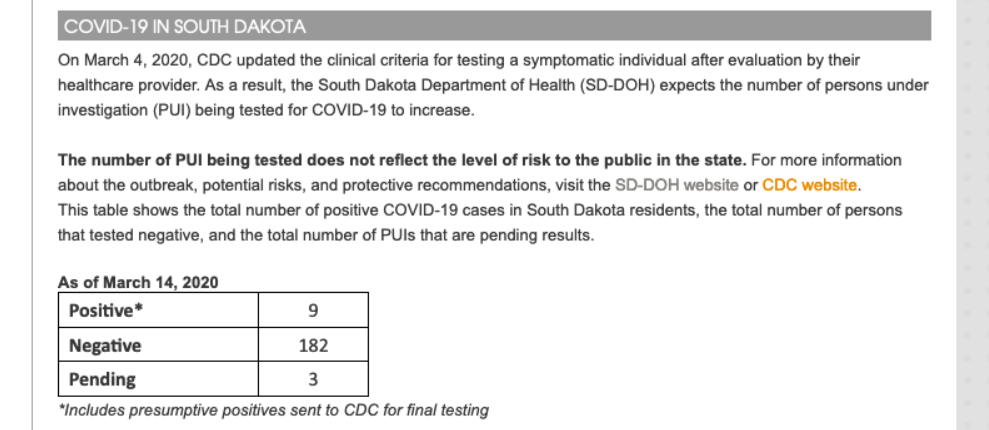
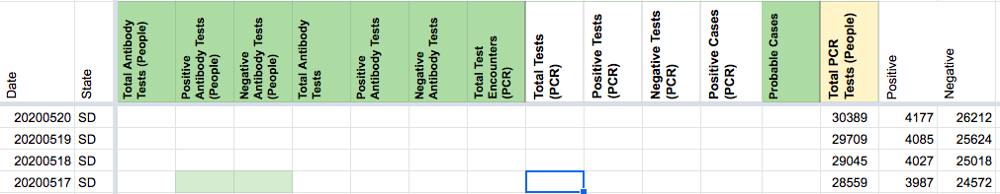
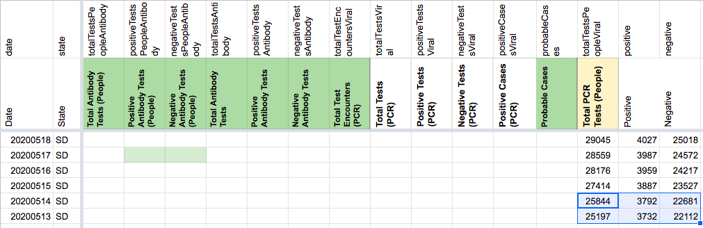
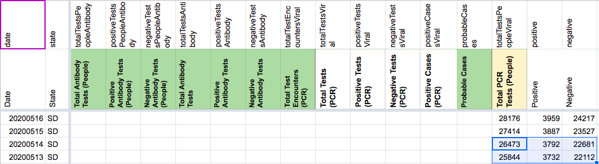
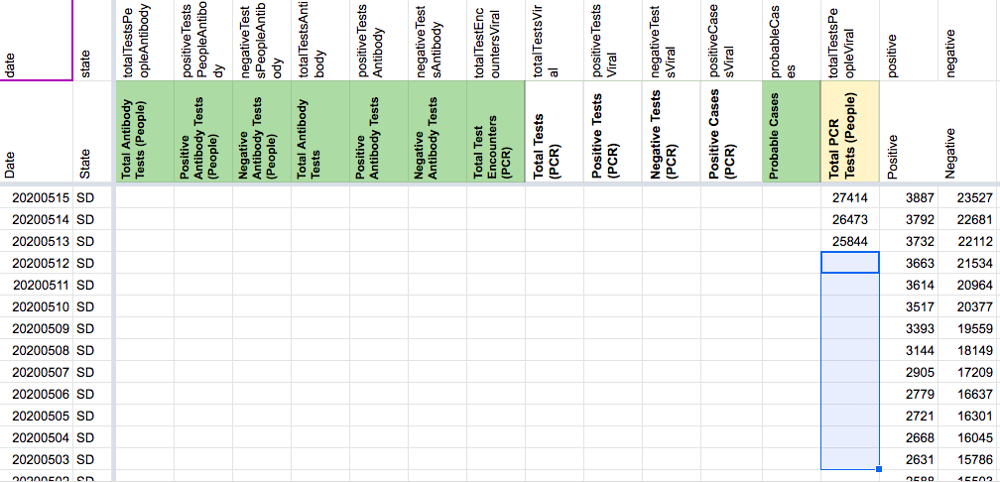
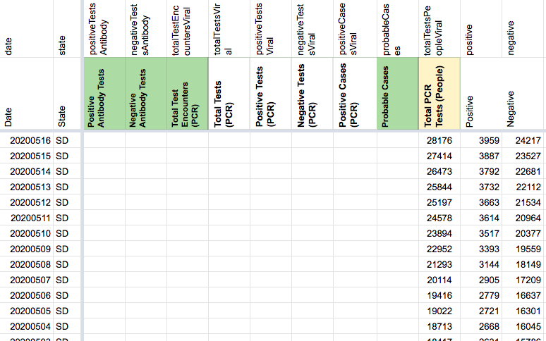
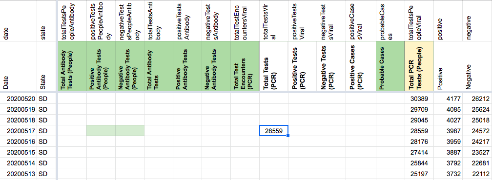

[SD] Backfill Total PCR Tests (People) from 3/15-5/13 with pos+neg
Issue number 763
the-daniel-lin opened this issue on August 14, 2020 at 10:27 am
Labels Historical Data not stale Backfill
State or US: South Dakota
Date Range: 3/15 - 5/13 Data Points: Total PCR Tests (People)
Describe the problem On 8/3, SD updated their dashboard to include “Total Tests,” which we have recorded in Total Tests (PCR).
We also have Total PCR Tests (People), but this only goes back until 5/13. After some digging, I found that all of our Total PCR Tests (People) values are sums of the pos+neg values from the pie chart on the SD dashboard. This pos+neg pie chart dates back until 4/20, and prior to this, they have a table separating pos/neg through our earliest screenshot for 3/15. We should be able to sum these pos+neg values for a complete time series.
The 3/15 screenshot shows data “as of” 3/14 and confirms that these values refer to individual people: 
Link to data source State screenshots
Comments
AFTER: 
BEFORE: The two highlighted values for Total PCR Tests (People) appear to be miscalculated. sum(c(positive,negative)) for 5/13 and 5/14 does not equal the associated values for Total PCR Tests (People). 
AFTER: (22681+3792) = 26473 (22112+3732) = 25844

BEFORE BACKFILL: 
AFTER: 
ALL VALUES IN TOTAL PCR TESTS (PEOPLE) 3/7-5/13:
25844 25197 24578 23894 22952 21293 20114 19416 19022 18713 18417 18091 17363 17028 16833 16612 16375 16274 15596 14824 14065 13446 12815 12326 12062 11660 11062 10550 9859 9296 9002 8553 8004 7647 7147 6748 6268 6020 5593 5224 4780 4382 4032 3717 3579 3217 2660 2445 2019 860 820 790 761 705 677 562 562 562 504 336 191 82 35 18 11 5 5 5
Looks like this is done!
BEFORE:
Reasoning for deletion: this value appeared to be an entry error, as it doesn’t align with our current process for reporting Total Tests (PCR), which only began on 8/3. 